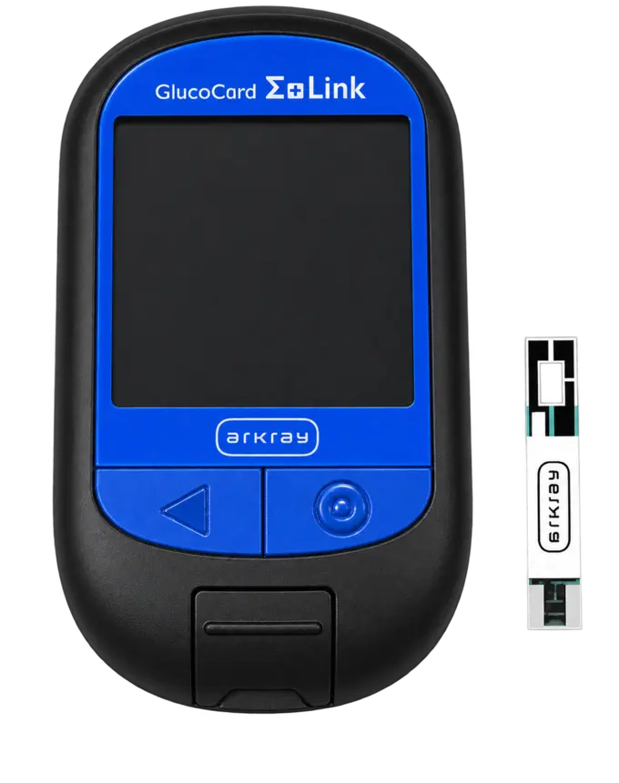
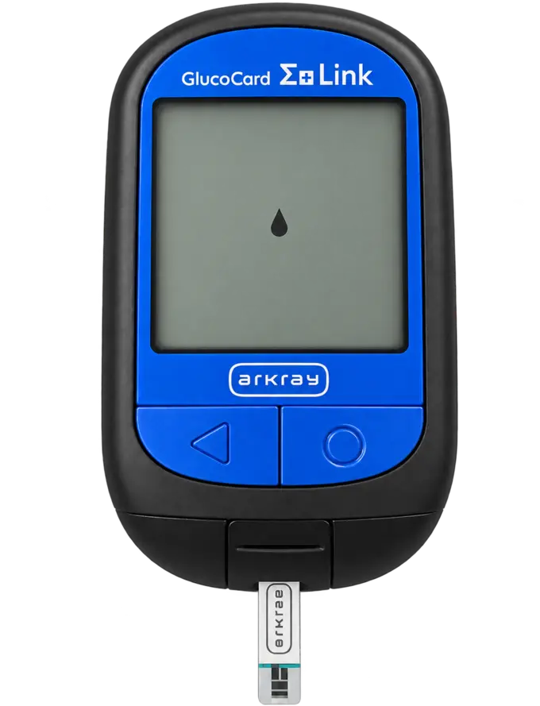
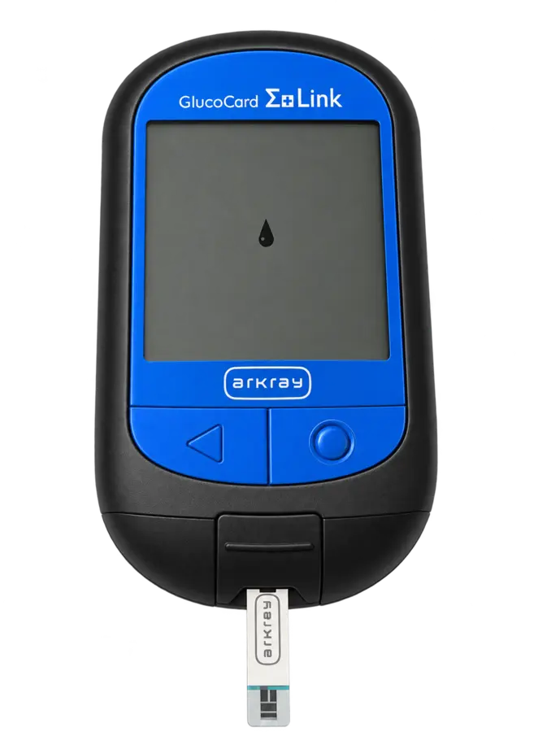

Глюкометр · приложение · отчёт
Показания глюкозы —
врачу одним файлом.
Подключите глюкометр к телефону, измеряйте сахар и отправляйте отчёты. Выберите нужный раздел.
Первое подключение
Установите WeCheck на телефон, затем подключите глюкометр по инструкции ниже.
Нажмите кнопку для своего телефона. Откроется страница приложения WeCheck в магазине.
Перед подключением проверьте дату и время на глюкометре. Включите Bluetooth на телефоне. Держите глюкометр рядом.
Инструкция по подключению
Листайте вниз — все страницы идут подряд. Нажмите на любую страницу, чтобы увеличить её.
Android: настройки приложения и Bluetooth
Android: регистрация глюкометра
Android: ввод PIN-кода и результат сопряжения
iPhone: настройки приложения и Bluetooth
iPhone: сопряжение и результат подключения
Передача результатов измерений в приложение
Как измерить сахар
Порядок действий для глюкометра GLUCOCARD G+ Link. Подготовьте тест-полоску, прокалывающее устройство и новый ланцет.
Чтобы показание передалось на телефон, до измерения откройте WeCheck. Bluetooth должен быть включён на телефоне и глюкометре.
Достаньте новую тест-полоску
Руки должны быть чистыми и сухими. Достаньте полоску из флакона и сразу плотно закройте крышку.
Не прикасайтесь к тёмному окошку проверки на полоске. Используйте полоску сразу после того, как достали её.

Вставьте полоску в глюкометр
Вставьте тест-полоску в отверстие снизу прибора до упора, аккуратно, без сильного нажима.
Важно: конец полоски с отверстием должен войти внутрь глюкометра. Не вставляйте её наоборот. Не давите и не сгибайте полоску — её можно испортить.
Прибор включится. Дождитесь значка капли на экране: глюкометр готов принять кровь.

Получите свежую каплю крови
Используйте прокалывающее устройство и новый ланцет. После прокола сразу поднесите полоску к свежей капле крови.
Не используйте кровь, которая течёт или растекается по коже.
Коснитесь капли концом полоски
Поднесите к капле свободный конец тест-полоски. Дождитесь, пока полоска впитает кровь и окошко проверки заполнится полностью.
Проверьте окошко на полоске
Не добавляйте кровь повторно. Не капайте кровь прямо на окошко проверки — результат может быть неверным.

Дождитесь результата
После завершения анализа показание появится на экране глюкометра. Обработайте место прокола так, как вам показал медработник, чтобы избежать инфекции.
После появления результата удалите тест-полоску. При включённом Bluetooth результат передастся в открытое приложение WeCheck автоматически.
Если показание не появилось в WeCheck, смотрите страницу 6 в разделе «Первое подключение».
Отправить отчёт
Сначала сохраните почту в WeCheck. Затем выберите даты и отправьте показания одним PDF-файлом.
На картинках показан iPhone. На Android последовательность похожая, но названия и расположение кнопок могут немного отличаться.
1. Сохраните адрес почты один раз
Потом приложение будет само подставлять адрес при отправке отчёта. При каждой отправке вводить его заново не нужно.
- Внизу экрана WeCheck справа нажмите «Настройки» — значок шестерёнки.
- В открывшемся списке нажмите самую верхнюю строку «Настройки».
- Проведите пальцем по экрану снизу вверх, чтобы пролистать список вниз. Найдите заголовок «Экспорт в PDF · CSV».
- Под этим заголовком нажмите «Адрес эл. почты1». Впишите или вставьте адрес ниже и подтвердите сохранение. Вернувшись назад, проверьте: адрес должен быть виден напротив этой строки.
2. Отправьте показания врачу
Эти действия повторяйте каждый раз, когда нужно отправить новый отчёт. Сначала убедитесь, что последние измерения появились в приложении.
Откройте экспорт в PDF
- Внизу слева нажмите «Глюкоза в крови» — значок капли.
- Вверху экрана нажмите «редактировать».
- В списке выберите «Экспорт в PDF».
Выберите даты отчёта
- Выберите «Указанный период». В поле «День старта» укажите первую дату, а в поле «День окончания» — последнюю. Нажмите «Дата», чтобы выбрать нужный день.
В этой версии приложения можно выбрать не больше 35 дней за один отчёт.
- Ниже, в разделе «Формат экспорта», поставьте все три переключателя в положение ON (включено), как на картинке.
- Нажмите большую кнопку «Создать PDF» внизу.
Нажмите «Отправить email»
- Откроется готовый отчёт. Внизу нажмите «Отправить email».
- На вопрос «Отправить PDF по эл. почте?» нажмите «Да».
Проверьте письмо и отправьте
- Откроется окно письма. В строке «Кому» должен стоять адрес ermakovadiabet@yandex.ru. В поле «Тема» напишите фамилию, имя и даты отчёта.
Например: «Иванова Мария, показания за 1–30 октября». Под темой должен быть прикреплён файл PDF.
- Нажмите синюю стрелку вверх в правом верхнем углу — это кнопка отправки письма.
На Android кнопка отправки может выглядеть как бумажный самолётик. Для отправки нужен интернет.
Если окно письма не открывается, проверьте, что на телефоне настроена ваша электронная почта в почтовом приложении.